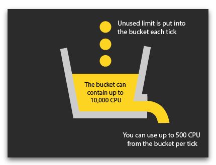

The Screeps game engine exists in two variants: browser-based (Simulation mode) and server-based (online mode). When you play in the Simulation mode, your scripts are executed by means of your browser only. The game API in the Simulation is the same as that on the server, but the server does not take part in game calculations.
On the other hand, in the online mode calculations of your scripts do not affect your browser in any way and done on the servers only. In order to maintain them, we offer the subscription that allows you to use CPU time of the game servers.
As described in the article Understanding game loop, time and ticks, the game process is divided into game iterations, or ticks. During each tick, the game engine calculates each player's scripts concurrently. Then all the planned activities are executed. The duration of one game tick is not fixed - a tick ends when all scripts of all players have been executed to the end.
CPU Limit
In order to avoid abuse of execution time (which would affect the duration of the game tick for all players), we have introduced a concept of CPU time limit. This is a duration of time in milliseconds during which your game script is allowed to run within one tick. The CPU limit 100 means that after 100 ms execution of your script will be terminated even if it has not accomplished some work yet. Your CPU time limit depends on your Global Control Level.
Bucket
However, for your convenience, there may be a rollover of unused time limit for using in future ticks. This allows to carry out resource-hungry operations in bursts once per several ticks, thus exceeding the CPU limit set in your account provided your scripts have saved resources in the preceding ticks.

If a script during a tick worked less time than the account CPU baseline limit set, the resulting difference is added to a cumulative bucket. You may accumulate up to 10,000 CPU. If the bucket contains any accumulation, your script can overrun your CPU limit using up to 500 CPU per tick from the amount accumulated in the bucket.
For example, if your account limit is set to 150 and you consume only 100 CPU per tick, then 50 CPU per tick will go to the bucket. You will be able to execute either a one-time burst exceeding the limit by 250 CPU every 5 ticks, or a series of 20 bursts for 500 CPU each once per 200 ticks.
The property Game.cpu.tickLimit reflects the amount of CPU that you can spend on a current tick given the accumulation. As soon as the Game.cpu.bucket is full, Game.cpu.tickLimit equals 500. It will start decreasing only after the accumulation is depleted. Game.cpu.tickLimit can never be less than your account limit, i.e the Game.cpu.limit property.
Therefore, you can plan your limit usage by postponing some calculations (for example pathfinding operations) to the moment when you are able to do them in bursts by exceeding the limit.